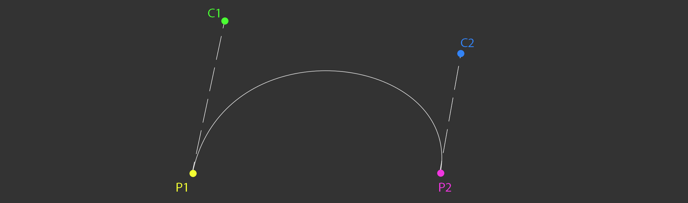
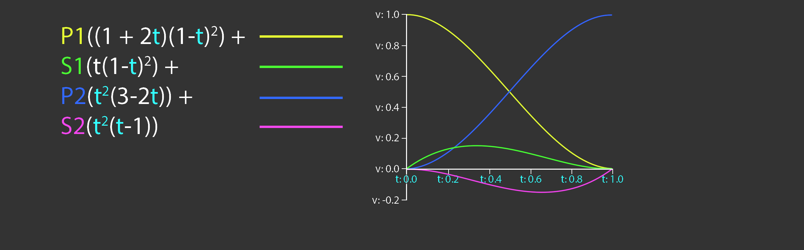

Curves
Modern animation systems are driven by curves. These curves are generally authored by artists. For example, the curve editor in Maya looks like this:

In the early 2000's games used to sample these animation curves at set invervals, then, interpolate the samples. Sampling animations like this yields an approximation to the animation curve. The approximation looks pretty good. The main inspiration for sampling curves at set time intervals is speed. Modern hardware is powerful enough to evaluate animation curves in real time, these days games use animation curves instead of sampled approximations.
There are two types of cubic curves that games use for animation, Bézier splines and Hermite splines. Blender uses Bézier, Maya and Unity use Hermite. Which type of curve you want to use is up to you. Deriving the formula for evaluating these curves is beyond the scope of this page, but it's covered in detail in the book.
Bézier curves
A Cubic Bézier curve contains four points, the start and end points as well as two control points. Let's explore how these curves can be expressed in code. The definition of the Bezier data structure is trivial, it holds two points and two control points.
template<typename T>
class Bezier {
public:
T P1; // Point 1
T C1; // Control 1
T P2; // Point 2
T C2; // Control 2
};
This is a naive interpolation function for Bézier curves.
template<typename T>
inline T Interpolate(const Bezier<T>& curve, float t) {
T A = lerp(curve.P1, curve.C1, t);
T B = lerp(curve.C2, curve.P2, t);
T C = lerp(curve.C1, curve.C2, t);
T D = lerp(A, C, t);
T E = lerp(C, B, t);
T R = lerp(D, E, t);
return R;
}
Plotting the curve is trivial. First, initalize a curve segment to draw. If you want to draw longer, more interesting curves, more segments can be added.
Bezier<vec3> curve; curve.P1 = vec3(1, 5, 0); curve.P2 = vec3(9, 5, 0); curve.C1 = vec3(2, 0.5, 0); curve.C2 = vec3(10, 0.5, 0); vec3 red = vec3(1, 0, 0); vec3 green = vec3(0, 1, 0); vec3 blue = vec3(0, 0, 1); vec3 magenta = vec3(1, 0, 1);
Next, draw the start, end and control points. To make the curve easier to see, draw lines from the start and end points to the appropriate control points.
// Draw all relevant points DrawPoint(curve.P1, red); DrawPoint(curve.C1, green); DrawPoint(curve.P2, red); DrawPoint(curve.C2, green); // Draw handles DrawLine(curve.P1, curve.C1, blue); DrawLine(curve.P2, curve.C2, blue);
Finally, plot the actual curve. The X axis represents time, the Y axis represents value. Time is normalized to be in the 0 to 1 range.
// Draw the actual curve
// Resolution is 200 steps since last point is i + 1
for (int i = 0; i < 199; ++i) {
float t0 = (float)i / 199.0f;
float t1 = (float)(i + 1) / 199.0f;
vec3 thisPoint = Interpolate(curve, t0);
vec3 nextPoint = Interpolate(curve, t1);
DrawLine(thisPoint, nextPoint, magenta);
}
The above code should draw something that looks like this.
The naive implementation provided before can be optimized. The steps needed to optimize it are covered in the book, the final function that is presented in the book looks like this:
template<typename T>
inline T Interpolate(const Bezier<T>& curve, float t) {
return curve.P1 * ((1.0f - t) * (1.0f - t) * (1.0f - t)) +
curve.C1 * (3.0f * ((1.0f - t) * 1.0f - t) * t) +
curve.C2 * (3.0f * (1.0f - t) * (t * t)) +
curve.P2 * (t * t * t);
}
This optimized version of the Interpolate function is evaluating the basis functions of a Bézier curve, the basis functions are shown below.
Hermite curves
Many applications such as Maya use Cubic Hermite Splines for animation instead of Béziers. Unlike Bézier splines, a hermite spline doens't use control points. Instead, the hermite spline records tangents (or slopes) at the control points. The point basis function of a Hermite Spline is shown below. P1 and P2 are the start and end points of the spline, S1 and S2 are the slopes, or tangents at P1 and P2 respectivley.
A hermite spline has the following basis functions:
Hermite splines are implemented similarly to Bezier curves. The code below demonstrates how to evaluate the basis functions. The curve to plot a Hermite spline is the same as the code to plot a Bézier spline.
template<typename T>
class Hermite {
public:
T P1; // Point 1
T S1; // Slope 1
T P2; // Point 2
T S2; // Slope 2
};
template<typename T>
T Interpolate(const Hermite<T>& curve, float t) {
return curve.P1 * ((1.0f + 2.0f * t) * ((1.0f - t) * (1.0f - t))) +
curve.S1 * (t * ((1.0f - t) * (1.0f - t))) +
curve.P2 * ((t * t) * (3.0f - 2.0f * t)) +
curve.S2 * ((t * t) * (t - 1.0f));
}
Why is everything templated? The formula for evaluating curves doesn't change between scalars or touples. It's the same formula for a float as it is for a vec2, vec3 or quat. Whatever data type T is will work so long as T operator*(const T& t, float f) and T operator+(const T& a, const T& b) are defined. There is one caveat, quaternions need to be neighborhooded and normalized.